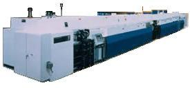

Lead Finish
Lead finish,
or 'leadfinish',
is the process of applying a
coat
of metal
over the leads of an IC to: 1) protect the leads against corrosion;
2) protect the leads against
abrasion;
3) improve the
solderability of the
leads; and 4) improve the
appearance of the leads. There are two
widely used leadfinish techniques in the semiconductor industry, namely,
plating
and
coating.
Further, there are two types of plating, i.e.,
pure metal
plating such as tin
plating and
alloy
plating such as tin/lead plating.
Coating
is the process of
depositing a filler metal (usually solder) over a surface, achieving
metallurgical bonding through
surface wetting.
The filler metal should have a melting temperature below 315 degrees
Celsius for the process to be classified as coating. The
driving force for a solder coating process is
surface tension,
i.e., wetting of the surface to be coated by the solder must be
achieved. A solder
diffusion layer
grows at the
surface-solder interface as solder spreads through the surface during
the coating process.
Tin plating
is a form of pure metal
electroplating,
which is the process of depositing a coating of metal on a surface by
passing a
current
through a conductive medium, or electrolyte. An electroplating
system has four (4) components: 1) the
cathode,
which is the surface to be coated; 2) the
anode,
which is the source of coating metal; 3) the
electrolyte,
the aqueous medium through which the metal ions from the anode
transfer to the cathode; and 4) the
power source,
which supplies the current or energy needed for the plating process.
The cathode, which is the
material to be plated, is the electrode where electrons are
consumed or where
'reduction'
occurs. The anode, which serves as source material for the plating, is
the electrode where
oxidation
occurs, i.e., where electrons and metal ions are released.
Example of reduction:
Sn+2
+ 2e- => Sn0
Example of oxidation:
Sn0 => Sn+2
+ 2e-
The energy needed for the
plating process to occur is known as the
electrochemical potential
or voltage.
This voltage is the total of three voltages: the reversible potential,
the overpotential, and the ohmic potential. If the applied voltage
is less than the electrochemical potential, the process of plating will
not occur.
Solder plating is a form of
alloy plating. An alloy is composed of at least two elements, at
least one of which is a metal. An alloy has better properties than
its component metals: it is harder, more corrosion-resistant, has better
solderability and better appearance.
|
 |
|
Fig.
1.
Example of an Electroplating Machine for Lead Finish
|
Common
Lead Finish-related
Failure Mechanisms/Attributes:
Lead
Corrosion
- corrosion of the leads due to imperfections in the lead finish
Poor
Solderability
- insufficient wetting of the solder often
caused by contaminants, excess additives, and inadequate plate
thickness
Tin
Whiskers
- formation
of very thin extrusions of tin material from the lead finish that
can result in electrical shorts between adjacent pins; observed in
pure tin plating or alloy systems with a high content of tin
Other
Lead Finish Failure Attributes:
Solder Dullness, Solder Roughness,
Pitting, Tarnishing,
Blistering, Dendrites, Nodules, Graininess, Deposits, Burns
Front-End Assembly
Links:
Wafer Backgrind;
Die Preparation;
Die Attach;
Wirebonding;
Die Overcoat
Back-End Assembly
Links:
Molding;
Sealing;
Marking;
DTFS;
Leadfinish
See Also:
Lead Finish Troubleshooting Guide;
Solderability Testing;
Solder Paste;
PCB Solder Printing;
Solder Reflow;
Solder Joint Reliability;
IC
Manufacturing;
Assembly Equipment
HOME
Copyright
©
2001-2006
www.EESemi.com.
All Rights Reserved.